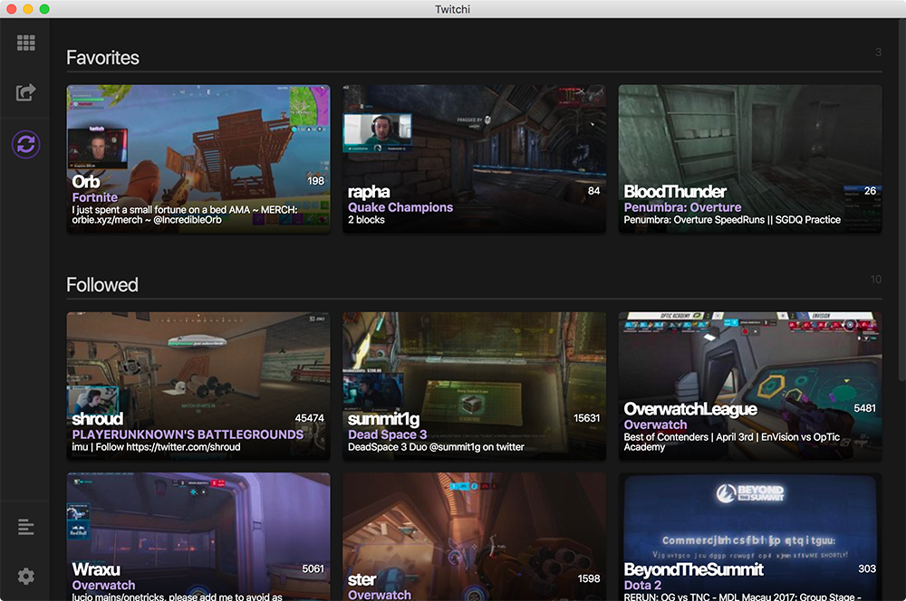
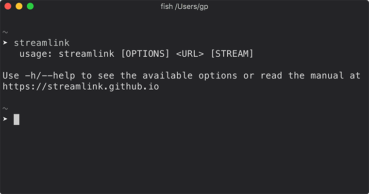
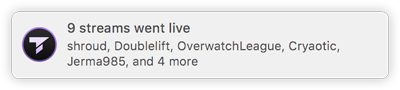
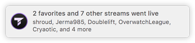
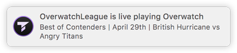

Twitchi
Help & Documentation
Table of Contents
About Twitchi
Twitchi is a desktop application for macOS, Linux, and Windows that displays live channels in your Twitch follow list, and provides an easy interface for viewing them, using either a native video player (VLC, MPC-HC, MPV, etc) via Streamlink, or using the default Twitch player in a pop-out window.

Notable Features
- View streams using Streamlink, or in a Twitch pop-out player
- Maintain a list of favorite channels, sorted to the top of the list whenever they're live
- Automatically open chat whenever a stream is opened (optional)
- System notifications when streams go live (optional)
Installation
Streamlink Setup
NOTE: This section can be ignored if you intend on only using the default Twitch player option.
NOTE: If you have a Streamlink install extracted from a .zip file or otherwise not installed globally, you are able to manually set up a path to the executable from the preferences page.
Twitchi's Streamlink integration relies on Streamlink being installed on your system, and available in your PATH environment variable.
Follow the instructions on the Streamlink Website to get Streamlink set up. There are options for Linux, macOS, and Windows available. Once it's installed, verify that it works and can be accessed via the command-line. Open up a command prompt or terminal window, type streamlink, and press enter.
It should print something similar to the following:

If you get an error, Streamlink is not installed properly, and Twitchi won't be able to use Streamlink until you set up a path manually. The Twitch pop-out player option will still work just fine.
Twitchi Setup
First, download a release from the GitHub releases page, or compile the application from source yourself (instructions in GitHub README here).
Once the application is installed, it should be ready for use. Launch it and you should be presented with a Twitch login window. Fill out the form, click login, and all the live streams in your follow list should show up.
You may also be presented with an info dialog informing you that Twitchi couldn't find a Streamlink installation. Read the instructions on the dialog and make the choice that suits your needs.
Usage / Stream List Page
Open a Stream
Followed Streams
Left-click a channel preview in the stream list to open it with your desired stream viewer (configured in the Preferences page).
If your stream viewer preference is set to Streamlink, your system-wide Streamlink configuration will be used; whichever video player you have specified in your Streamlink config will be opened by Twitchi (currently Streamlink uses VLC by default).
Other Streams
To watch a stream that you don't follow, use the Launch Stream page.
Example Video:
Right-click menu options
An explanation of the right-click menu items.
Right-click on a channel in the stream list
| Menu Item | Description |
|---|---|
| Watch/Close Stream | Launch the stream using the configured stream viewer, or close the stream if it's already open. |
| Open Chat | Open the stream's chat in a pop-out window. |
| Watch stream with quality | Choose a stream quality option, and open the stream using the configured stream viewer. |
| Add to Favorites | Add the stream to your favorites list (Twitchi-exclusive; this is not a standard Twitch feature). Favorite streams will show at the top of your channels list. |
| View Channel Page | Open the twitch channel in your default internet browser. |
| View Game Directory | Open the game directory in your default internet browser. |
| Unfollow Channel | Unfollow the channel. |
Right-click on the stream list refresh button
| Menu Item | Description |
|---|---|
| Refresh Now | Refresh the list. Same action as clicking the refresh button normally. |
| Enable/Disable auto-refresh | Enable or disable the auto-refresh feature. This option is also available in the preferences page. |
Preferences Page
Stream Options
Live Notification
Turn on or off [stream] went live notifications. These notifications are delivered by your operating system's default notification center.
Twitchi is conservative with notifications, and as such only shows one notification per list refresh (and only if there's new information). To contain it to one notification, but still show as much information as possible, the content of notifications depends on what's happened.
Examples:
| Several channels went live |  |
| Several channels went live, including favorites |  |
| A single channel goes live |  |
Chat
Automatically open Twitch chat when a stream is opened in a pop-out Twitchi window.
NOTE that these chat windows might have trouble remembering your dark/light mode preferences, and they don't support third-party plugins like BetterTTV or FrankerFaceZ (and likely never will).
Preferred Stream Quality
Quality to attempt to open streams with.
If the preferred quality is not available for a stream during opening, Twitchi will try to use the next lowest available quality. If there are no valid options to use, Twitchi will give one last try with the quality option "best" before reporting that it couldn't open the stream.
Stream Viewer
Stream viewer for Twitchi to use. Can either be a Streamlink window, or the default Twitch player in a pop-out window.
The Twitch player option will open the standard Twitch HTML5 player in a Twitchi window.
If Streamlink is selected, Twitchi will use your system Streamlink configuration, including the chosen video player (VLC, MPC-HC, MPV, etc).
Stream List
Auto-refresh
Enable or disable the automatic refreshing of the main stream list.
Refreshing will happen in the background at a set interval, and update the list with any new streams, as well as send a notification if notifications are enabled.
Auto-refresh duration
Time in minutes between automatic list refreshes. The minimum value is 3 minutes as to not annoy Twitch's servers too much. The number can go as high as you'd like.
Account
Change Account
Sign out of Twitchi on your current account, and sign into another account. This button will show a login window immediately.
Sign out
Sign out of Twitchi on your current account. After clicking this, the stream list will not work until you sign into an account.
Logs Page
The logs page will show the Streamlink log messages of all the streams you've currently got open (and any that have been open recently). If a stream fails to open and Twitchi doesn't show an in-app toast notification, the logs page might display some valuable info.
Each stream listed on the logs page shows a button to close the associated stream player.
Logs of a stream will be cleaned up and no longer shown once the stream's process has been closed for more than 5 minutes.